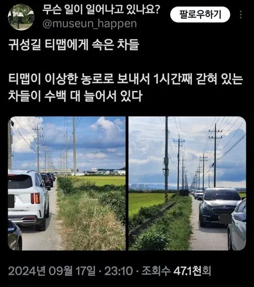
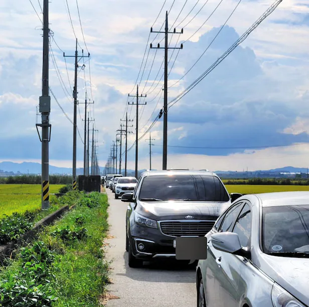
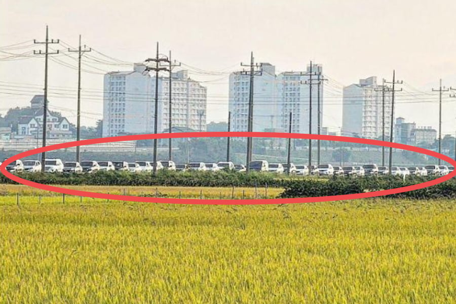
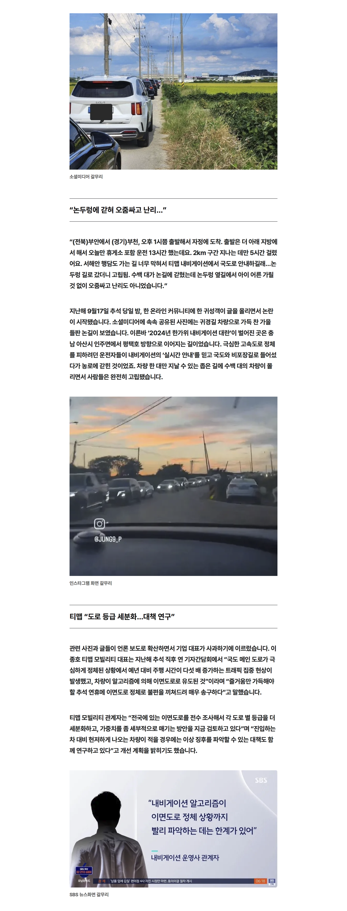

펠티어 맥세이프 충전기 달아놓고 무선 동글로 안드 오토 쓰느까 넘 좋음
원내비 쓰다가 서비스 종료하고 걍 아틀란 씀
티맵 이상해진지 꽤 됐음
아“틀”란 쓰는 틀딱이 아직도 있네
앱 켤때 광고, 들어가지면 팝업광고, 검색하려고하면 납치광고, 검색결과에 업체광고 염병떠는 것도 그런데, 그냥 신호 맞춰 서도 급감속이라고 ㅈㄹ하는 것때매 쓸 수가 없음
오토에버네비가 진국임
논두렁에 왜가 ㅅㅂ ㅋㅋㅋㅋㅋ
블루링크 가입해라
원래 네비 자체를 잘 안쓰고 쓰더라도 안드로이드 오토나 카플레이로 티맵만 썼는데, 새차사고 스마트 회생제동이랑 스마트 크루즈 이거 쓰다보니 이젠 순정만 쓰게됨.
근데 과거 아반떼 AD 순정이랑 티맵에서 자주 찐빠내던게 지금 순정에서는 별로 없는것 같더만 이젠 순정이 낫다는 평가였구나
이때 이후로 큰길우선으로 누르는 사람 늘어남ㅋㅋ
티맵 병신된지 오래
광고범벅에 민자도로 비싼데로만 안내하잖아ㅋㅋ
난 논뚜렁이라든가 골목길이라든가 좁은길로
네비가 안내하면 무시함 ....무조건 큰길로만
네이버 지도가 제일 상식적으로 안내해 줌
도저히 끼어들지도 못하는 4차선 넘어가서 좌회전 시키는 것도 없고
현대 네비는 그러더라 쉽헐
신월도로에선 가끔 시킴...
네이버가 시골에서는 제일 x 같은 길로 유도하는 경향이 강하던디
옛날에 뭔 이상한 임도같은데로 안내했다가 진짜 죽을뻔함
임도고 농로도 안가리고 다 갈수있다고 유도함
현기 순정도 의외로 괜찮더라
네이버 써라 괜찮음
유인나 목소리 하면 좋음
오 꿀팁
티맵 그리고 분산안내 하려는것땜에 더 개판난걸로..
티맵 몇년전이긴 한데
가다가 지멋대로 경로 바꾸더니 시간 2분 차이에 2천원 더 내는 길로 안내하는거 몇번 당하고
네이버로 바꿈
돈 더내면 최소한 제안으로 들어와야되는거 아닌가
네이버 써라… 인나 눈나가 가자는데 안 갈꺼야?
티맵 진자 개병신된지 오래됨 ㄹㅇ루다가
내 경험으로는 현기순정네비가 최고임
나도 저거당해서 네이버씀
네이버 지도한테 먹힐거 같음
안그래도 사람들 네이버 지도 존나 쓰는데
검색하는 김에 그쪽으로 안내까지 해달라고 하면 해주는데
뭐하러 티맵같은 앱을 따로 켜서 쓰나?
나도 티맵쓰다가 갈아타고 다시 안돌아오고 있음
티맵 시팔련 어제 밤에 정체 풀렸는데도 계속 국도만 처 안내해주네 시팔련이 고속도로우선 검색해도 시팔 국도로 안내를 처해줘 ㅅㅍ 그래서 억지로 비틀어서 다른길로 가니 그제서야 알려줌 ㅅㅍㅅㅍ
네이버지도가 최고야 티맵 통행료 5000원짜리 유료도로 계속 안내해
hud 연동이 tmap 밖에 안돼서...네이버지도는 이런 거 왜 안 만드냐
쌍용은 아이나비 쓰는데 아이나비의 장점이 무리수를 존나 안 둠. 근데 내비라는게 100퍼 완벽한 게 없어서 걍 취향대로 쓰면 됨.
삽교호에서 핫도그먹고 가는데
저기 다 서있길래 쟤넨 얼마나 빨리 가고싶었으면
다 저기로 갔냐 아 ㅋㅋ 하면서 지나깄었는제
티맵 빼고 다 괜춘한듯
아니 요새 네비 자꾸 유료 도로로 일부러 안내하는거 같지 않냐? 이거 나만 느끼는건가?
티맵안씀 근데네이버도 과속카메라인식못하는부분읶어서 과태료나옴 스벌
제네시스 순정네비 쓰는데 짱좋던데 ㅋㅋ
hud연동도 연동이지만 걍 빠른길을 잘 알려주는듯
안드로이드 오토+충전만 피하면 열 그렇게 안나던데
충전기 껴놓으면 진짜 뜨겁더라